Stage by stage: old vs new, and how an agent checks it
SN 2024pxl, LCO 1 m and 0.4 m images. Both pipelines reduced the same 99 frames of 2024-07-22…28; snpipe also reduced the
whole season. Every figure is made from the products on disk by tools/stage_report.py.
The check loop (replaces a person at checkpsf, checkdiff, getmag --show…)
Each frame gets a <frame>.<stage>.qa.json with metrics, limits and status; each verdict is logged in
review/verdicts.jsonl. Details: agents.md.
Cosmic rays
Find and mask cosmic-ray hits in every image.
bit-identical masks: 0 pixels differ in the frame shown; 18/18 frames identical
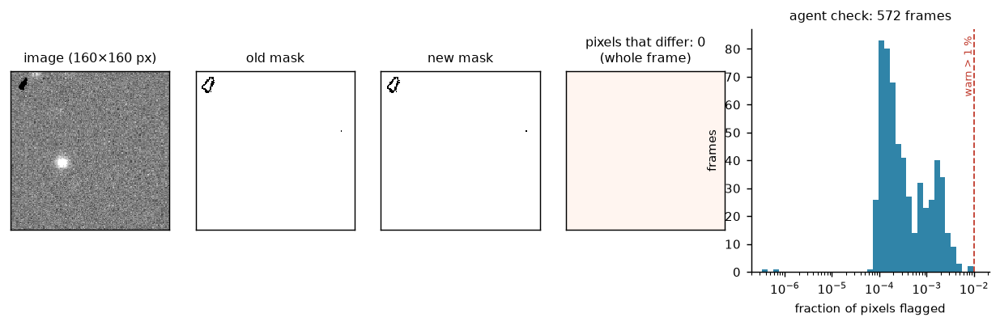
How the agent checks it
| check | limit | if it fails |
|---|---|---|
| fraction of pixels flagged | ≤ 1 % | warn → review packet (likely a bad frame, e.g. trails or saturation) |
Astrometry (WCS)
Check where each image points on the sky.
checkwcsnew check (none before); median rms 0.21″ on the 18 templates checked
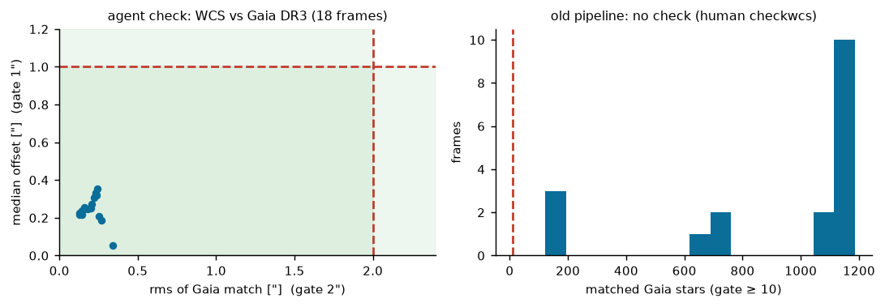
How the agent checks it
| check | limit | if it fails |
|---|---|---|
| matched Gaia stars | ≥ 10 | refit; fail if still too few |
| rms of the match | ≤ 2″ | refit, then fail |
| median offset | ≤ 1″ | refit, then fail |
PSF model
Measure the shape of stars (the PSF) and the aperture correction.
phot, psf, group, nstaraperture correction +0.004 ± 0.009 mag (n=78); aperture photometry identical to IRAF (0.000)
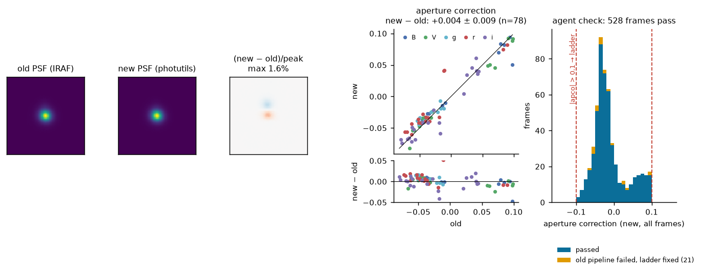
How the agent checks it
| check | limit | if it fails |
|---|---|---|
| |aperture correction| | ≤ 0.1 mag (old limit) | remediation ladder → recheck → review if still failing |
| PSF FWHM vs other frames of the night | ensemble outlier | review packet |
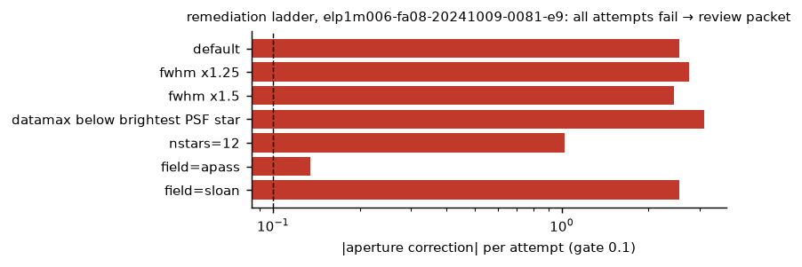
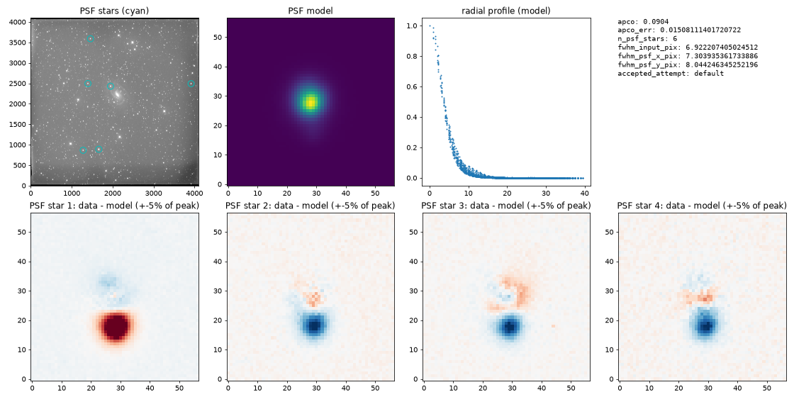
SN photometry
Fit the PSF to the supernova and measure its brightness.
allstarSN PSF magnitude +0.010 ± 0.035 mag (n=78)
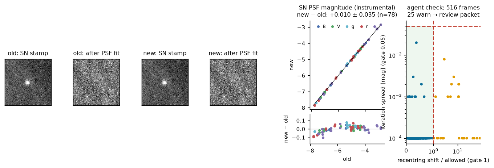
How the agent checks it
| check | limit | if it fails |
|---|---|---|
| how far the fit moved from the SN position | ≤ max(2 px, FWHM/2) | warn → review packet |
| spread between fit iterations | ≤ 0.05 mag | warn → review packet |
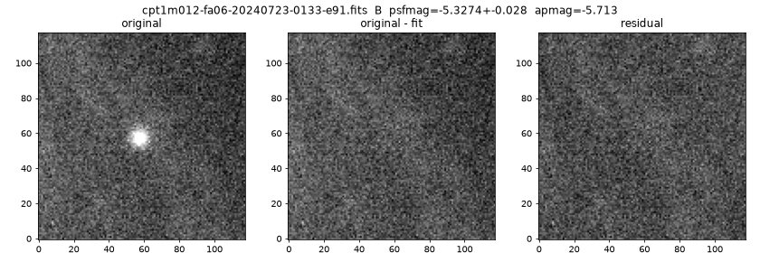
Zero points
Compare field stars with a catalog to get the zero point and colour term.
zero point +0.000 ± 0.011 mag (n=41)
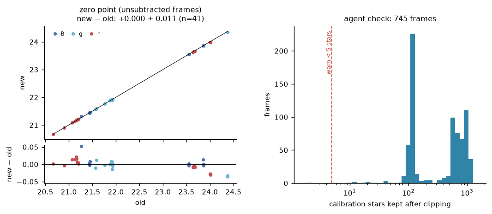
How the agent checks it
| check | limit | if it fails |
|---|---|---|
| calibration stars kept after clipping | ≥ 5 | warn → review; frame not calibrated if none |
Image subtraction
Subtract a pre-explosion template so only the supernova is left.
SN aperture mag on differences +0.005 ± 0.027 mag (n=92). The noise check finds 19 of 175 new differences failed (PyZOGY's flux-scale fit); of the 8 such frames in the subset, the old pipeline also has no magnitude for 7. Failed frames are dropped from the light curve; the zero-point flux scale (--gain zeropoint) is being tested on them.
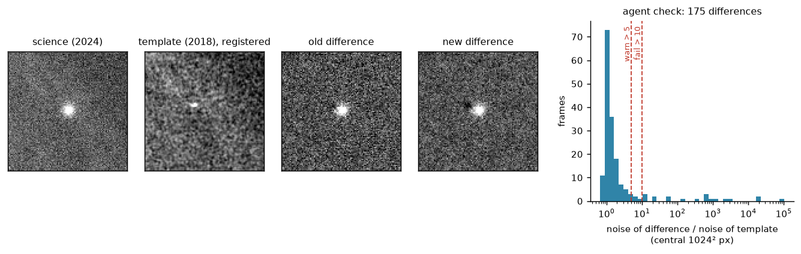
How the agent checks it
| check | limit | if it fails |
|---|---|---|
| noise of difference / noise of template | ≤ 10 (warn > 5) | fail: the flux-scale fit went wrong (seen: 20×) |
| masked fraction | ≤ 50 % | warn |
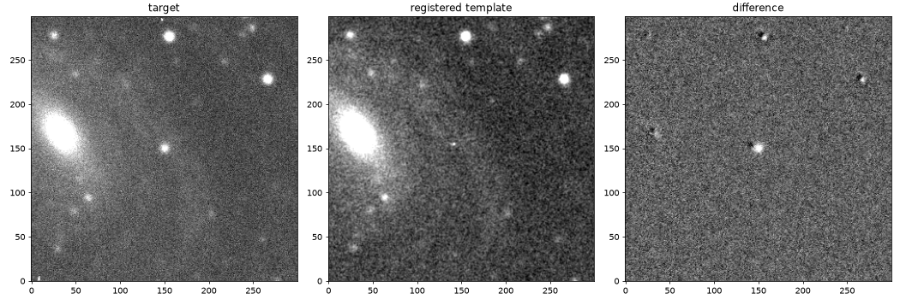
Calibrated magnitudes
Apply zero points and colour terms to get the final magnitude.
SN calibrated mag on differences +0.002 ± 0.031 mag (n=92)
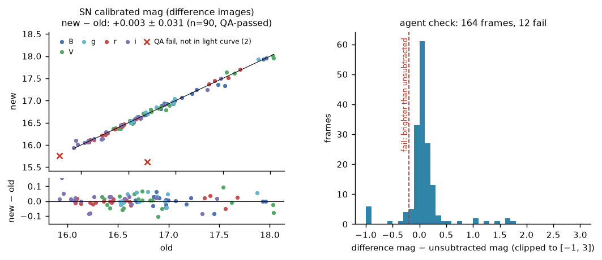
How the agent checks it
| check | limit | if it fails |
|---|---|---|
| difference mag − unsubtracted mag | ≥ −0.2 mag | fail: the SN cannot be brighter after removing the galaxy |
Light curve
Collect all points into the light curve.
--show)152 points; 5 flagged for review
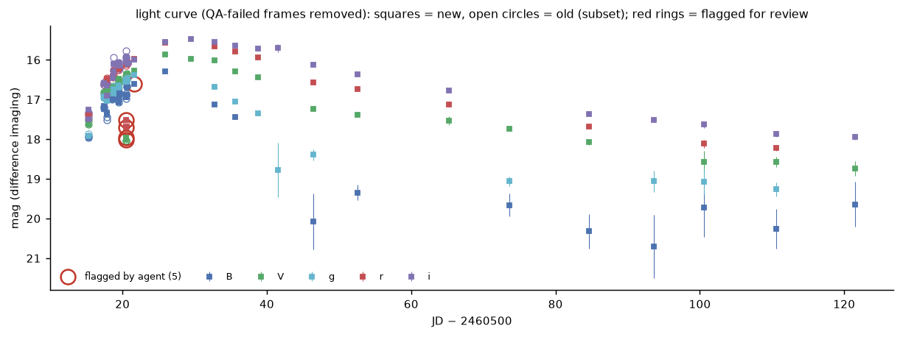
How the agent checks it
| check | limit | if it fails |
|---|---|---|
| deviation from running median (±1.5 d, same band) | ≤ max(5σ, 5×error, 0.1 mag) | flagged, kept in the table for review |
Credits
Built by Claude (Anthropic, Claude Opus 5.5) in Claude Code, directed and reviewed by Yize Dong.